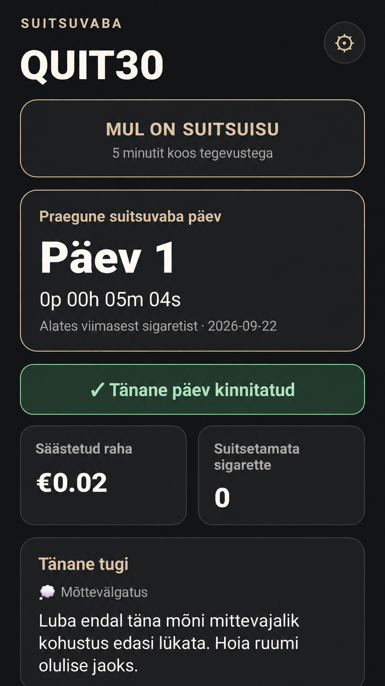

QUIT30
QUIT30 aitab suitsetamisest loobuda, aitab jälgida suitsuvaba aega, säästetud raha ja suitsetamata jäänud sigarette ning toetab sind nii enne loobumist kui ka pärast 30 päeva täitumist.

Lihtne idee. Selge edasiminek.
Suitsuvaba aeg
Reaalajas loendur alates viimasest sigaretist.
Säästetud raha
Arvutab suitsetamata jätmisega säästetud raha.
Suitsetamata sigaretid
Näitab täisarvuna, mitu sigaretti on jäänud suitsetamata.
Mis su kehas toimub
Üldine info keha taastumisest suitsuvaba aja järgi ja järgmine oluline muutus.
Tänane tugi
Mõttevälgatused, väikesed sammud, suitsuisu nipid, saavutused ja muu toetav sisu.
Mul on suitsuisu
5-minutiline suitsuisu abi koos praktiliste tegevustega.
Päris kalender
Kuupõhine kalender kinnitatud suitsuvabade päevade ja libastumiste jälgimiseks.
Saavutused
1, 3, 7, 14, 21, 30 päeva ja pikemad suitsuvaba aja saavutused.
Miks ma loobun?
Salvesta kuni kolm isiklikku põhjust, miks suitsetamisest loobud.
Libastumise registreerimine
Märgi libastumine ilma varasemat progressi automaatselt kustutamata.
Valmistun loobumiseks
Kasuta äppi enne valitud loobumisaega ja muuda hiljem loobumisplaani.
Teavitused
Igapäevased meeldetuletused ja motivatsiooniteavitused.
ET / EN / RU
Rakendus toetab eesti, inglise ja vene keelt.
30+ päeva
Progressi jälgimine jätkub ka pärast 30 päeva täitumist.
Proovi QUIT30 äppi
Jälgi oma suitsuvaba aega ja edusamme Androidi testversioonis. Esimesed 30 päeva on oluline eesmärk, kuid progressi jälgimine jätkub ka hiljem.
LAE ALLA APK🔒 Turvaline APK
APK on DEVILAATORi enda builditud ja digitaalselt allkirjastatud. Rakendus ei sisalda reklaame ega teadlikult lisatud pahavara.
APK paigaldamisel võib Android esimesel korral küsida luba rakenduste paigaldamiseks väljaspool äpipoodi.
Alusta omas tempos
Kui sa pole veel loobunud, saad määrata tulevase loobumisaja ja kasutada äppi juba ettevalmistuseks. Hiljem saad loobumisplaani seadetes muuta.
QUIT30 ei vaja kontot. Progress, põhjused ja muud rakenduse andmed salvestatakse seadmesse.